sass官网这样介绍：Sass是最成熟、稳定、强大、专业的CSS扩展语言
compass官网这样介绍：compass是一个开源的css编写框架。是在sass基础之上二次开发的。
首先我们先聊一聊css的痛点，在编写css时我们经常会遇到这样的问题：
1.css代码不好组织维护。
2.css3书写前缀。
3.sprite 图片文件中哪怕只有一个组成图片增加了1px的高度，有时整个sprite相关的css都要重新书写。
...
使用Sass和compass可以解决在编写css时痛点，能够有效的组织样式，图片，字体等项目文件。
sass是由ruby开发的，所以安装saa前需要先安装ruby，点击http://rubyinstaller.org/downloads，点击下载适合你的ruby版本。
在安装的时候，请勾选Add Ruby executables to your PATH这个选项，添加环境变量，接下来一路next即可。
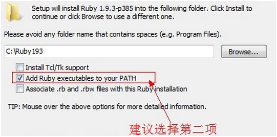
gem与ruby的关系，就好比nodejs与npm的关系，安装ruby时也一起安装了gem，建议修改gem源为国内的，原因你懂得 。
gem source --remove https://rubygems.org/
gem source -a http://gems.ruby-china.org
gem install sass
gem install compass
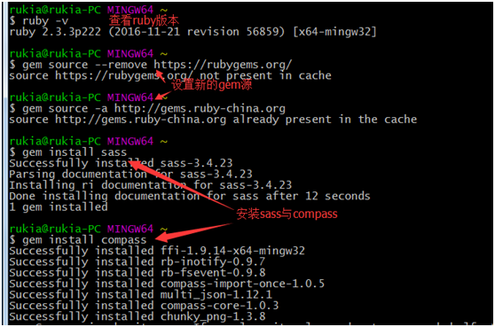
新建一个项目learn-sass-compass，进入这个项目，然后创建compass项目
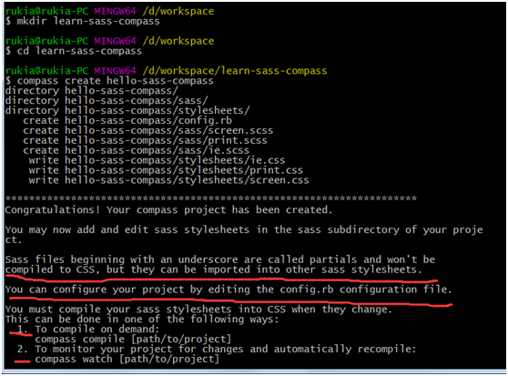
compass项目创建成功后，我们看下成功提示，其中有几点需要我们注意：
1.sass文件以下划线开头被认为是局部文件，不会被编译成单独的css文件。
2.你可以通过config.rb配置你的项目。
3.按需编译指令为compass compile [path/to/project]
4.监听项目变化指令compass watch [path/to/project]
ok，你现在的项目应该是这个样子，接下来我们介绍用sass解决css的痛点的。
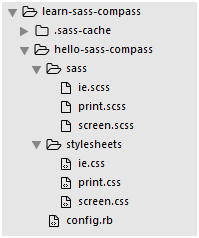
sass是CSS扩展的语言，所以sass支持css语法，除此之外，sass还有支持定义变量变量、嵌套、继承等特性。
Compass是基于Sass开发的框架，里面集成了很多功能，比如说css3前缀、合成sprites等。
sass文件最终要被编译成css文件才能引入到页面中
sass与compass结合使用，可以解决书写css时遇到的痛点，首先执行compass watch来监听sass文件的变化，sass文件一旦有变化，compass会自动执行将sass文件编译成css文件。可以通过ctrl+c退出。
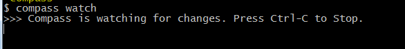
打开sass文件夹下面的screen.scss会看到@import "compass/reset";
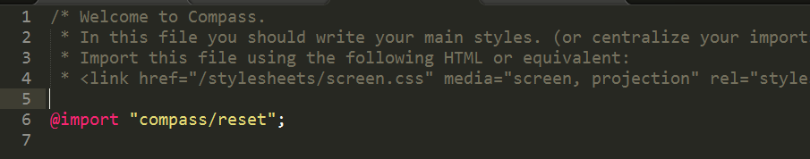
在stylesheets/screen.css文件中会添加reset.css的样式
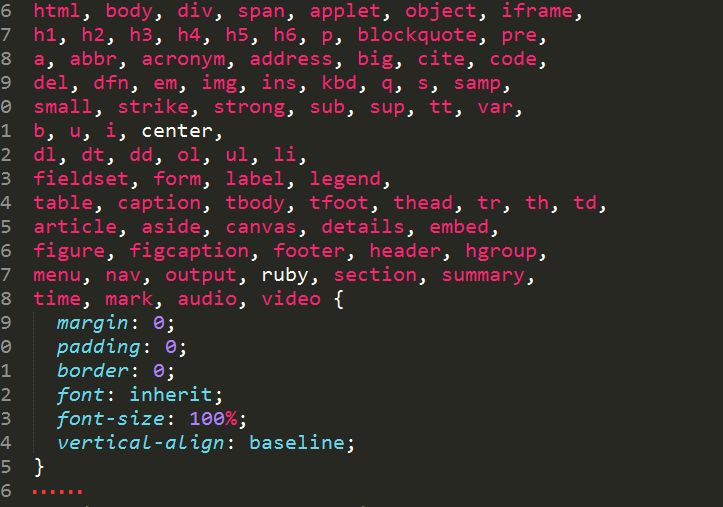
screen.scss代码
$error-color:"red";
.error{
color:$error-color;
font-size:14px;
}
.danger-error{
color:$error-color;
font-size:14px;
font-weight: bold;
}
screen.css对应的代码
.error {
color: "red";
font-size: 14px;
}
.danger-error {
color: "red";
font-size: 14px;
font-weight: bold;
}
我们在sass文件夹下新建_variable.scss，把$error-color:"red";放进去。
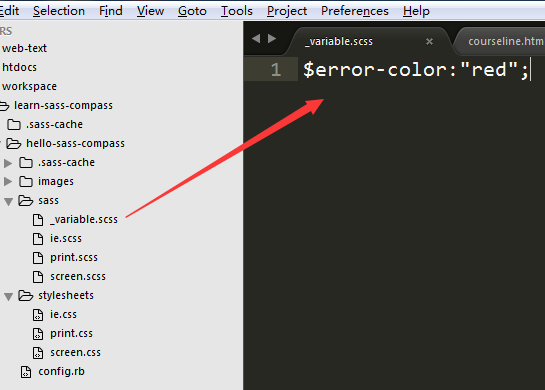
screen.scss代码
@import "_variable";
.error{
color:$error-color;
font-size:14px;
}
.danger-error{
color:$error-color;
font-size:14px;
font-weight: bold;
}
screen.css对应的代码
.error {
color: "red";
font-size: 14px;
}
.danger-error {
color: "red";
font-size: 14px;
font-weight: bold;
}
嵌套有两种选择器嵌套，样式嵌套
screen.scss代码
.nav {
height: 50px;
li {
height: 50px;
font: {
weight:bold;
size: 14px;
}
a{
color: #000;
&:hover{
color:#ccc;
};
}
}
}
screen.css对应的代码
.nav {
height: 50px;
}
.nav li {
height: 50px;
font-weight: bold;
font-size: 14px;
}
.nav li a {
color: #000;
}
.nav li a:hover {
color: #ccc;
}
screen.scss代码
.error{
color:$error-color;
font-size:14px;
}
.danger-error{
@extend .error;
font-weight: bold;
}
screen.css对应的代码
.error, .danger-error {
color: "red";
font-size: 14px;
}
.danger-error {
font-weight: bold;
}
我们需要引入compass提供的css3模块
screen.scss代码
@import "compass/css3";
.rounded {
@include border-radius(5px);
}
screen.css对应的代码
.rounded {
-moz-border-radius: 5px;
-webkit-border-radius: 5px;
border-radius: 5px;
}
首先ctrl+c退出compass watch
在hello-sass-compass项目中新建images/icon,在icon文件夹下添加两张png图片
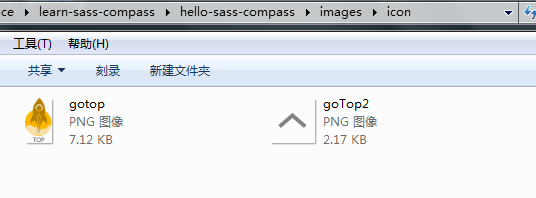
screen.scss代码
@import "compass/utilities/sprites"; @import "icon/*.png"; @include all-icon-sprites;
执行compass compile，再次打开images文件夹发现，多了一张合并后的sprite。
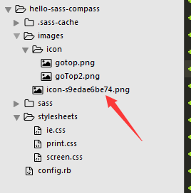
screen.css也生成了对应的代码
.icon-sprite, .icon-goTop2, .icon-gotop {
background-image: url('/images/icon-s9edae6be74.png');
background-repeat: no-repeat;
}
.icon-goTop2 {
background-position: 0 0;
}
background-position: 0 -64px;
}
相对地址
从上面我们看到背景图片的url为绝对路径，很多时候我们需要设为相对路径，只需要把config.rb中的
http_path = "/"
改成
http_path = "../"
然后重新执行一次compass compile即可
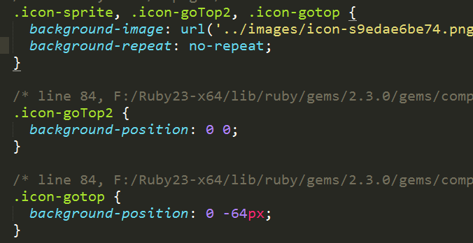
修改资源存放目录
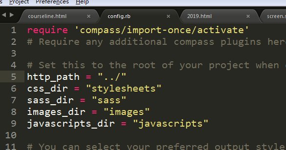
css_dir ：css目录
sass_dir ：sass目录
images_dir ：images存放目录
javascripts_dir ：js存放目录
修改对应的值，然后重新执行一次compass compile即可
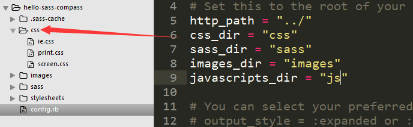
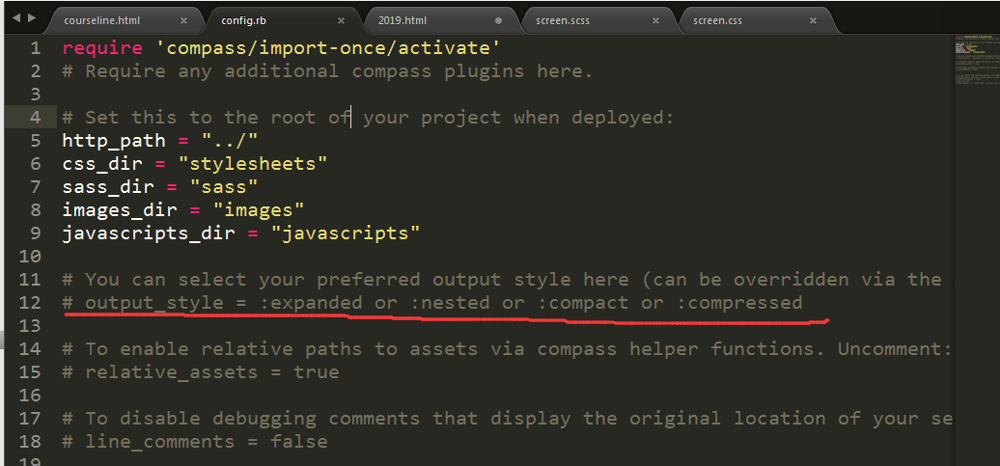
设置output_style = compressed，并把本行注释去掉，然后重新执行一次compass compile即可
sass与compass特性远不止这些，更多请参考，
sass官网：http://sass-lang.com/
compass挂网：http://compass-style.org/